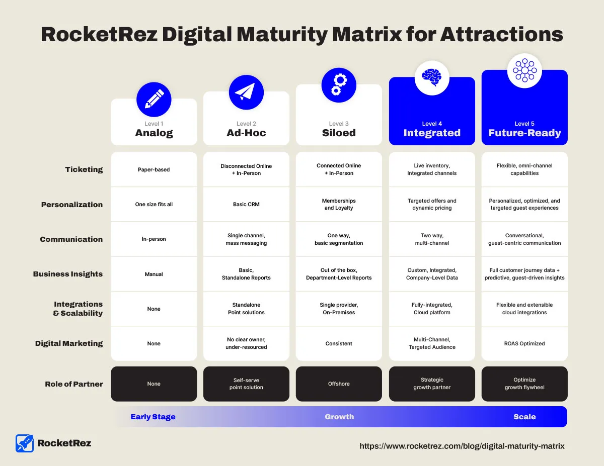

Did you miss out on the Passenger Vessel Association (PVA) Maritrends convention this year? Fear not! Here we'll be diving into the highlights of a thought-provoking presentation by John Pendergrast, the CEO of RocketRez.
John took the stage to discuss "Data, Automation, and the Personalized Guest Experience", offering powerful insights into the digital transformation sweeping across the tours and attractions industry and the future of the passenger vessel industry.
A Wake-Up Call to Innovate
John Pendergrast laid out the stark reality for businesses in the passenger vessel industry as we look to the future of the industry. He stated:
"We're witnessing the rise of a digital native generation. Businesses that fail to innovate and adapt to this new reality risk stagnation or worse, failure."
In 2018, there were 148 million online travel bookings. For the year 2023, that number was estimated at 700 million. The digital age isn't coming, it's here, and it's accelerating at a pace faster than most can keep up with.

In 2023, the number of online travel bookings increased dramatically from 148 million to 700 million.
This dramatic increase in online bookings underscores the critical need for businesses to embrace digital transformation. Companies that fail to adapt risk being left in the dust by their more digitally savvy competitors.
The Imperative of Digital Transformation
In his presentation, John identified four primary reasons why businesses fail or plateau:
- Failure to Innovate and Adapt
- Ignoring Digital Transformation
- Inadequate Understanding of Customer Needs
- Resistance to Change
1. Failure to Innovate and Adapt
In an era where technology is evolving at breakneck speed, constant innovation is not just a luxury, but a necessity. Businesses must invest in resources and make strategic decisions to upgrade their operations and customer management technology.
2. Ignoring Digital Transformation
It's no longer a question of "if" but "when" digital transformation should take place. Ignoring this shift can lead to significant losses in customer satisfaction, increased costs, and stagnated growth.

36% of our audience polled at John's presentation said they had no clear strategy to get further along on their path to Digital Maturity.
3. Inadequate Understanding of Customer Needs
Knowing your customers' preferences and behaviors can significantly enhance service delivery and the success of new offerings.
4. Resistance to Change
Fear of the unknown often fuels resistance to change. Embracing change is essential for staying competitive in today's rapidly changing market dynamics.
Beyond Service: The Era of Personalized Experiences
In today's hyper-connected world, providing just a service won't cut it. One of the key points in John's presentation was the significance of personalizing the guest experience. Customers today expect more than just service, they want experiences tailored to their unique needs and preferences.
This may seem daunting, but there are unprecedented opportunities for those willing to seize them. Here are five key methods that businesses in the passenger vessel industry can use to navigate the digital transformation and chart their course toward success:
- Your Guest Experience is Your Best Marketing
- Be Equipped With The Best Digital Tools
- Make Decisions with Data
- Adapt to Industry Dynamics
- Flexibility is a Must-Have
1. Your Guest Experience is Your Best Marketing
In an age where online reviews and social media can make or break a business, the quality of your guest experience has never been more important.
72% of consumers say positive reviews make them trust a business more, and additionally, before visiting a business, 89% of consumers read online reviews, and 98% consider reviews an essential resource when making purchase decisions.
Providing personalized and memorable experiences isn't just good service, it's powerful marketing. Word-of-mouth recommendations from satisfied customers can significantly boost your reputation and attract new customers.
2. Be Equipped With The Best Digital Tools
To keep up with the pace of change, businesses must equip themselves with the best digital tools available.
We moved one customer from handheld ticketing devices used at the point of boarding the boat to self-serve kiosks that a majority of their 20,000 weekly passengers now use. This removed huge bottlenecks at boarding and at their customer service desk.
Another customer flipped their ticket sales from 70% through offline channels like phone and walk up to more than 90% online through direct web bookings and their online concierge portal for resellers.
Whether it's customer relationship management (CRM) software, data analytics tools, or digital marketing platforms, having the right technology can streamline operations, enhance customer engagement, and give you a competitive edge.
3. Make Decisions with Data
Making informed decisions is crucial in today's data-driven world. By leveraging data analytics, businesses can gain valuable insights into customer behavior, market trends, and operational efficiency. These insights can guide strategic decision-making and help businesses stay ahead of the curve.
4. Adapt to Industry Dynamics
The passenger vessel industry, like all industries, is subject to constant change. Whether it's evolving customer expectations, emerging technologies, or regulatory changes, we must stay informed and be ready to adapt. Those who can anticipate and respond to industry dynamics will be best positioned to thrive.
5. Flexibility is a Must-Have
In the face of rapid digital transformation, flexibility is key. We must be willing to reassess our strategies, adapt to new technologies, and pivot in response to changes in the market. A rigid approach can hinder growth, while flexibility allows businesses to seize new opportunities as they arise.
Achieving Digital Maturity with RocketRez
What this means is that reaching a high level of digital maturity is not just beneficial, but crucial. With the RocketRez Digital Maturity Matrix, you can assess your organization's digital maturity across seven key areas, providing a comprehensive understanding of where you stand and the areas you need to focus on.

One of the critical steps towards digital maturity is adopting an integrated platform. By streamlining operations, enhancing the guest experience, providing real-time insights, and personalizing services, an integrated platform can significantly boost your digital transformation efforts.
Benefits of a Unified, Flexible, Integrated Platform
- Streamlines your operations
- Enhances your guest experience
- Provides system-wide giving real-time insights
- Allows personalization based on preferences and behavior
- Saves time and costs
Remember, your guest experience is your best marketing tool, and equipping your business with top-tier digital tools is a must. Decisions need to be data-driven, and you must stay flexible and adapt to industry dynamics.
Staying Competitive In Today's Digital Landscape
Digital transformation is no longer a choice; it's a requirement for businesses to stay competitive. Constant innovation, understanding customer needs, and embracing change are all necessary elements for success in today's digital landscape.
If you're ready to take the next step and leverage digital transformation in your business, our team of experts at RocketRez is here to help. We invite you to book a demo on our website and explore how our solutions can help your business navigate the digital age with confidence.